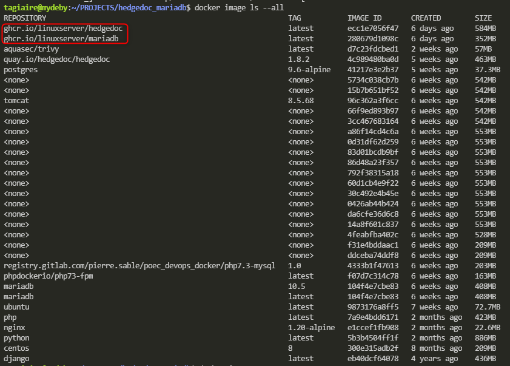

2021-08-02
3.1. Dépôt Git 3.2. Authentification par clés SSH
Schéma fonctionnel
Code
Conclusion
Déploiement d’une solution de documentation collaborative sous forme de micro-service.
Organisation du projet et de l’équipe projet
Pour assurer le travail en équipe et le versionning des modifications tout au long du projet, nous utiliserons Git.
Dans notre cas GitHub:
Pour sécurisé l’accès au dépot GitHub, nous serons authentifié par clés SSH. Depuis la machine qui se connectera au dépot:
stagiaire@ansiblectl:~$ cat /home/stagiaire/.ssh/id_ed25519.pub
ssh-ed25519 AAAAC3NzaC1lZDI1NTE5AAAAIG8EhxxAC6ZHMyLQo7c+rRTPD48T/PJxb4Rn9qQNXLHl stagiaire@ansiblectl
stagiaire@mydeby:~/PROJECTS$ tree -aL 1 hedgedoc_mariadb/
hedgedoc_mariadb/
├── docker-compose.yml
├── .env
├── .envdatabase
├── .envhedgedoc
├── .git
├── .gitignore
├── hedgedoc_config
├── hedgedoc_uploads
├── mariadb_database
└── README.md
4 directories, 6 filesContenu du docker-compose.yml:
version: "3"
services:
mariadb:
image: ghcr.io/linuxserver/mariadb:${MARIADB_IMAGE_VERSION}
container_name: ${DATABASE_NAME}
volumes:
- ${DATABASE_VOLUME}:/config
env_file:
- .envdatabase
networks:
backend:
restart: ${RESTART_DEFAULT}
hedgedoc:
image: ghcr.io/linuxserver/hedgedoc:${HEDGEDOC_IMAGE_VERSION}
container_name: ${APP_NAME}
depends_on:
- mariadb
volumes:
- ${APP_VOLUME}:/config
- hedgedoc_uploads:/hedgedoc/public/uploads
env_file:
- .envhedgedoc
ports:
- "${APP_PORT_IN}:${APP_PORT_OUT}"
networks:
backend:
restart: ${RESTART_DEFAULT}
volumes:
mariadb_database:
hedgedoc_config:
hedgedoc_uploads:
networks:
backend:ansible-galaxy role install -r roles/requirements.yml -p roles/
- extracting ansible-role-docker__3.1.2 to /home/stagiaire/ProjetCapGemini/Entreprise2fifou/roles/ansible-role-docker__3.1.2
- ansible-role-docker__3.1.2 (3.1.2) was installed successfullyAvec requirements.yml contenant:
---
### Roles
## GITHUB / GALAXY
roles:
- src: 'https://github.com/geerlingguy/ansible-role-docker'
version: '3.1.2'
scm: git
name: ansible-role-docker__3.1.2
...ansible-galaxy collection install community.docker
Process install dependency map
Starting collection install process
Installing 'community.docker:1.9.0' to '/home/stagiaire/.ansible/collections/ansible_collections/community/docker'# Preparation du bootstrap-playbook.yml
## Copie de clé
ssh-copy-id -i /home/stagiaire/.ssh/id_ed25519.pub stagiaire@192.168.3.3
## Test de connexion
ssh stagiaire@192.168.3.3Premier déploiement du playbook bootstrap-playbook.yml:
Avec bootstrap-playbook.yml contenant:
---
- name: PLAY creation utilisateur ansible
# Variabilisation de la valeur hosts (pattern) pour pouvoir la définir au lancement du play
hosts: "{{ cible | default('all') }}"
tasks:
# Déclaration d'une task qui appelle le module user afin de disposer d'un user ansible
- name: Utilisation du module user pour creer ansible
ansible.builtin.user:
name: ansible
shell: /bin/bash
# Utilisation d'une variable pour permettre une distinction du groupe désiré
groups: "{{ grp_sudo | default('sudo') }}"
# Déclaration d'une seconde task qui appelle le module authorized_key pour pousser une clé publique pour le user ansible
- name: Module authorized_key pour deployer la clé publique chez ansible
ansible.posix.authorized_key:
user: ansible
state: present
key: "{{ lookup('file', '/home/stagiaire/.ssh/id_ed25519.pub') }}"
# Déclaration d'une troisieme task pour générer un fichier de config sudo dédié au user ansible
- name: Module copy pour s'assurer q'une fichier sudo pour ansible soit présent avec un contenu précis
ansible.builtin.copy:
dest: '/etc/sudoers.d/ansible'
content: 'ansible ALL=(ALL:ALL) NOPASSWD: ALL'
backup: yes
owner: root
group: root
mode: 0440
validate: /usr/sbin/visudo -csf %s
...Avec deploy-docker.yml contenant:
---
- name: PLAY Apelle le rôle ansible-role-docker
hosts: "{{ cible | default('all') }}"
roles:
- role: ansible-role-docker__3.1.2
become: yes
...On appelle le playbook deploy-apps.yml:
---
- name: PLAY déploiement docker-compose
hosts: davidtest
tasks:
- name: Installation prérequis python
ansible.builtin.apt:
name: ['python', 'python3-pip','python-setuptools']
- name: Install and upgrade pip
pip:
name: pip
extra_args: --upgrade
executable: pip3
- name: installation docker et docker-compose
ansible.builtin.pip:
name: ['docker-compose', 'docker']
executable: pip3
- name: checkout git
ansible.builtin.git:
repo: "https://github.com/davidchdebray/hedgedoc_mariadb.git"
dest: /home/stagiaire/ProjetCapGemini/DOCUMENTATION
force: yes
tags: always
- name: deploiement docker-compose
community.docker.docker_compose:
project_name: "HedgeDoc_MariaDB"
project_src: /home/stagiaire/ProjetCapGemini/DOCUMENTATION
restarted: yes
state: present
register: output
...Nous réalisons l’analyse de vulnérabilité de nos images Docker grâce à trivy

Trivy(tripronounced like trigger,vypronounced like envy) is a simple and comprehensive vulnerability/misconfiguration scanner for containers and other artifacts. A software vulnerability is a glitch, flaw, or weakness present in the software or in an Operating System.Trivydetects vulnerabilities of OS packages (Alpine, RHEL, CentOS, etc.) and language-specific packages (Bundler, Composer, npm, yarn, etc.). In addition,Trivyscans Infrastructure as Code (IaC) files such as Terraform and Kubernetes, to detect potential configuration issues that expose your deployments to the risk of attack.Trivyis easy to use. Just install the binary and you’re ready to scan. All you need to do for scanning is to specify a target such as an image name of the container.

Tutoriel: https://www.geekmunity.fr/?p=1804
D’abord il s’agit de choisir le conatiner à analyser. Pour lister l’ensemble des images disponibles:
On obtient:

Les 2 images qui nous intéresse pour le moment sont:
REPOSITORY TAG IMAGE ID CREATED SIZE
ghcr.io/linuxserver/hedgedoc latest ecc1e7056f47 6 days ago 584MB
ghcr.io/linuxserver/mariadb latest 280679d1098c 6 days ago 352MBPour lancer un scan de vulnérabilité sur une image, utiliser la syntaxe suivante:

Ici on récupère les informations de vulnérabilités dans un fichier de logs associé:

On peut également scanner par type de vulnérabilités, exemple avec CRITICAL:

Installation de Trivy sur le serveur ansiblectl.
Pour faire cette installation nous utiliserons un script, dont est la bes est disponible sur le site: https://aquasecurity.github.io/trivy/v0.19.2/getting-started/installation/.
Contenu du script install_trivy.sh:
sudo apt-get install wget apt-transport-https gnupg lsb-release -y
wget -qO - https://aquasecurity.github.io/trivy-repo/deb/public.key | sudo apt-key add -
echo deb https://aquasecurity.github.io/trivy-repo/deb $(lsb_release -sc) main | sudo tee -a /etc/apt/sources.list.d/trivy.list
sudo apt-get update -y
sudo apt-get install trivy -yOn peut scanner les vulnérabilités d’un service (serveur:port):